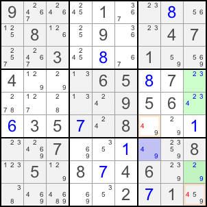

返回课程目录
WXYZ-Wing 可以视为ALS的一种简化情况，比 XY-Wing 稍难发现。寻找一个双候选格，以及由三个格子组成的另一个 ALS。
下图中，蓝色双候选格和绿色 ALS 的受限共同候选是 9。候选 4 位于两个 ALS 的 R7C7 与 R5C9，可从同时看见这两格的 R6C7 和 R9C9 删除 4。

如果 R7C7 为 4，两个目标格都不能为 4；如果 R7C7 为 9，绿色格子被迫成为 2、3、4 的 Naked Triple ，两个目标格仍不能为 4。
返回课程目录